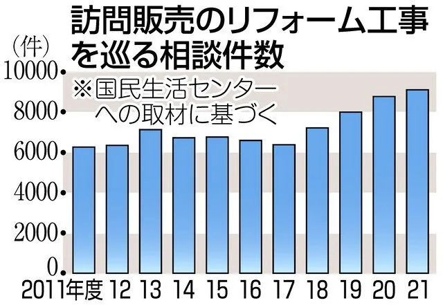

はじめに
リフォーム工事のトラブルがコロナ禍で増加しています。
お家にいることが、多くなり訪問営業に応対してしまうことが増えたためです。
特に60代以上のお年寄り4分の3を占めており、老朽化した持ち家の修理をお願いしてしまうケースが多いそうです。
ご実家がトラブルに巻き込まれないためにも一読して頂ければ幸いです。
また、業者選びについては過去記事で解説していますのでこちらのリンクからご覧ください。

「なぜ、大沼商会？」
株式会社大沼商会は、一級建築板金技能士の屋根修理業者です。
一級建築板金技能士は、厚生労働省主催の国家資格です。
厚生労働省主催『建築板金技能士』…技能検定ポータル技のとびら
国が定めた基準で一級の知識と技術を持っているということです。
綺麗な施工と変わった屋根の難しい施工に自信があります。その裏付けとして国家資格を所有しています。
先述のトラブルは、そもそも工事をする気がない詐欺業者もいますし、技術不足で雨漏りが再発という業者もいるので、国家資格だけでその不安が払拭できるわけではないですが、大沼商会では、国家資格にプライドを持ち施工をしています。
他社に断られた屋根や、一度直したはずなのにまた雨漏りしているなど他業者にはできない屋根でも大沼商会は雨漏りを止めて見せます。
一級建築板金技能士
国家資格とはいえ、一級建築板金技能士が簡単なんじゃないの？と思うかもしれません。わかりやすい難易度でいうと教員採用試験と同レベルです。加えて受験資格に実務経験の年数があります。実技試験もあるので実務経験の技術力はそもそもで必須ですが、、、
学科の内容は板金に関する専門的な物で、この器材はこういう特徴がある、この素材はこういう加工が適している、こういう屋根はこういう物を使う方がいいなど。
ベテランの職人さんは長年の勘である程度はわかりますが、大沼商会の職人は理論的に説明ができます。
一級建築板金技能士の施工
屋根修理業者が提供するサービスは雨漏りしない屋根にすることです。
それは最適化されている、いないに問わず雨漏りをしない屋根にするという目的に向かっています。
大沼商会の職人は雨漏りしない屋根にすることは勿論。最適化することに努めています。施工期間、施工方法、材料に関してお客様に合わせたご提案をさせていただいております。
国家資格を売りにする以上、杜撰な工事で評判を落とすようなことは絶対にしません。
逆に職人がプライドをもって施工をします。どこよりも綺麗な屋根は「株式会社 大沼商会」に依頼をしましょう。
最後に
株式会社 大沼商会は一級建築板金技能士の屋根修理屋さんです。
リフォームトラブルの被害に遭われる方が少しでも減るよう心より願っております。
屋根のことでご相談・ご質問あればお気軽にご連絡ください。